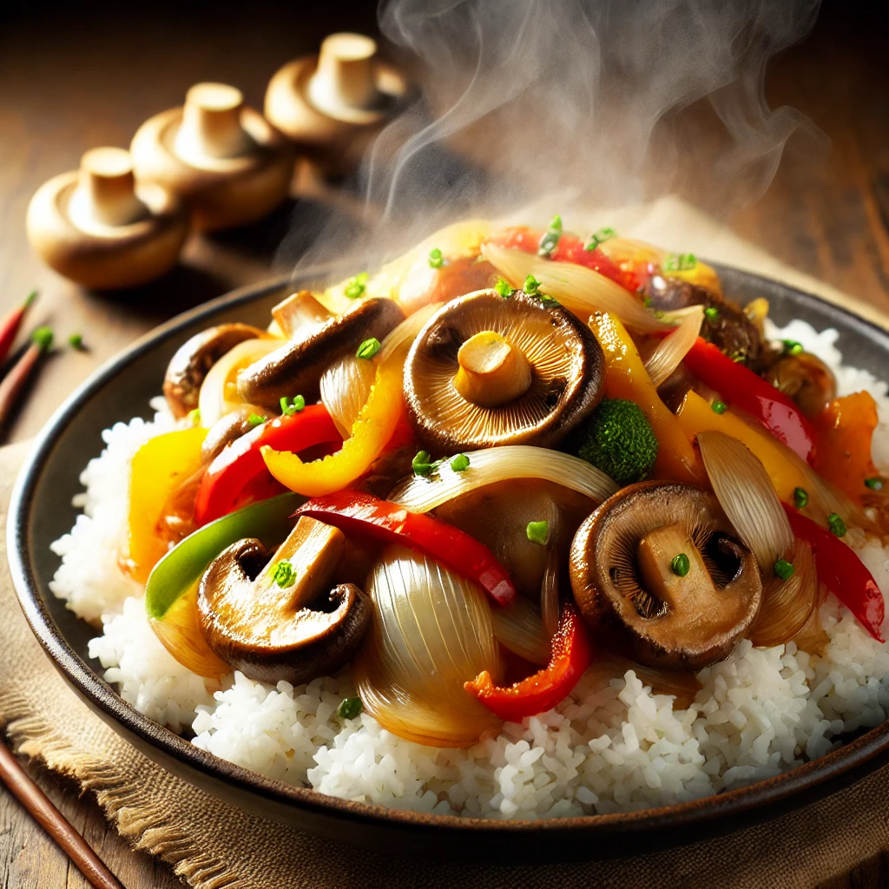
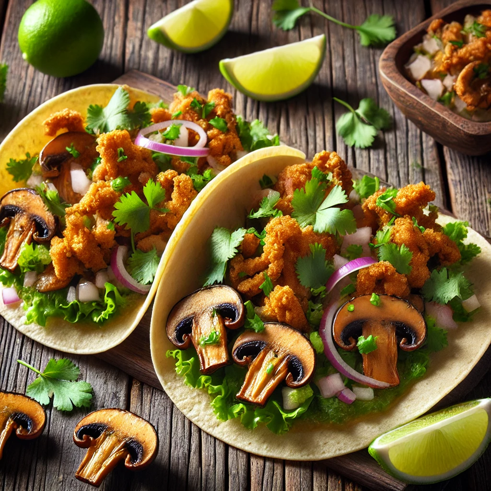

Mushroom Recipes
Shiitake Mushroom Stir-Fry

Ingredients:
- 1 lb shiitake mushrooms, stems removed and sliced
- 2 tbsp soy sauce
- 1 tbsp sesame oil
- 1 garlic clove, minced
- 1 tsp ginger, grated
- 1 bell pepper, sliced
- 1 onion, sliced
- Cooked rice, for serving
Instructions:
- Heat sesame oil in a large pan over medium heat.
- Add garlic and ginger, sauté for 1 minute.
- Add onion and bell pepper, cook until softened.
- Add shiitake mushrooms and soy sauce, cook until mushrooms are tender.
- Serve over cooked rice and enjoy!
Oyster Mushroom Tacos

Ingredients:
- 1 lb oyster mushrooms, shredded
- 2 tbsp olive oil
- 1 tsp smoked paprika
- 1 tsp cumin
- 1 tsp chili powder
- 1 garlic clove, minced
- Corn tortillas
- Optional toppings: diced onion, cilantro, lime wedges, salsa
Instructions:
- Heat olive oil in a large pan over medium heat.
- Add garlic and cook for 1 minute.
- Add shredded oyster mushrooms and spices, cook until mushrooms are crispy and golden.
- Warm tortillas in a separate pan.
- Assemble tacos with mushrooms and desired toppings.
Grilled Portobello Mushrooms
Ingredients:
- 4 large portobello mushrooms, stems removed
- 1/4 cup balsamic vinegar
- 2 tbsp olive oil
- 2 garlic cloves, minced
- Salt and pepper to taste
Instructions:
- In a small bowl, mix balsamic vinegar, olive oil, garlic, salt, and pepper.
- Brush the mixture onto both sides of the portobello mushrooms.
- Preheat the grill to medium-high heat.
- Grill mushrooms for 4-5 minutes on each side, until tender and slightly charred.
- Serve as a main dish or on a sandwich.